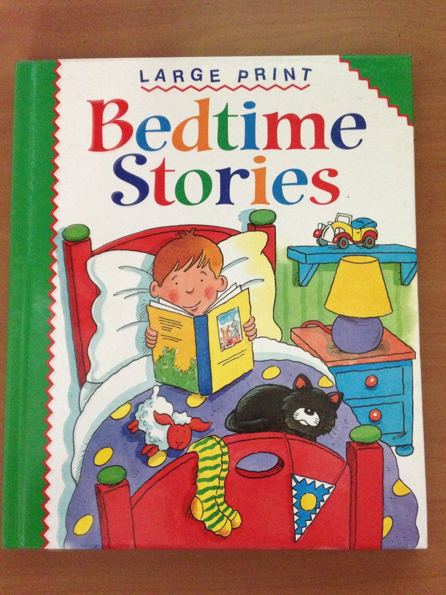

MY HOBBY IS READING
My hobby is reading intresting books and knoledgble books in my free time.Whenever i come home from school i read such books.i study in 4th grade.I know reading is a good habit.This hobby can be devoloped however.Reading books keep us busy.It is good source for knoledge and inspiration.it makes us loyel, punctual in life.
BYE
MY FAVOURUTE BOOKS
My favourite books are story books.I read many story books like panchathantra,good night stories etc.

MY WORKS
I did so much of work .I read many books and wrote one story "WOLF AND FOX".my work for the story is here-
Synopsis
A Wolf and a Fox are living together where the Fox (being the weaker of the two) is forced to do all the hard work for the Wolf. One day, the Wolf makes the Fox get him something to eat and the Fox says he knows where there are a couple of lambs. The Fox steals a lamb for the Wolf. But not content with just one, the Wolf goes back for the other where he is caught by the farmer's men and severely beaten.
The next day, the Wolf again makes the Fox get him some food. The Fox says he knows of a farm where a woman is baking pancakes and steals some for the Wolf. Wanting more, the Wolf goes to the farm on his own, but causes a commotion which gets the woman's attention and is again severely beaten.
Some time later, the Wolf again makes the Fox get food. The Fox says he knows of a farmer's cellar where meat is being stored and leads the Wolf to the cellar. The wolf gobbles up the meat while the Fox also takes some but keeps checking to make sure he can still get out the way he came in. The Fox's constant scurrying gets the attention of the farmer who goes to investigate. The Fox is able to escape, but the Wolf has eaten so much that he can't get out and is eventually caught and killed by the farmer.
The Fox makes it back to the forest where he is pleased that he is free of the Wolf's services.
Popular culture
The Wolf and the Fox is featured in Grimm's Fairy Tale Classics with the Wolf voiced by Steve Kramer in the English dub and the Fox voiced by Dave Mallow in the English dub. There were some differences in the plot of this episode. In this version, the Wolf has had terrible hunting skills where he was unable to catch a deer, some rabbits, a family of ducks, and was repelled by a farmer when he tried to target the farmer's cattle. The Wolf has also tried to obtain some followers from a deer, a squirrel, a hawk, and a bear. The Fox ends up taking up the Wolf's previous offer to make him his follower which is where the Wolf makes the Fox obtain food for him. The first part involved fishing from a frozen pond during winter. The Wolf got his tail stuck in the ice which the Fox had to remove at the cost of part of the Wolf's tail. Then in the spring, Fox obtained a fried egg from a farmer's house. The Wolf tried to go for another, but broke one of the dishes giving himself away to the farmer's wife as the farmer beats up the Wolf. After talking with a deer, the Fox comes up with a plan where he takes the recuperated Wolf to a basement containing salted meat. To complete his trap to get rid of the Wolf, the Fox causes a racket to alert a local farmer and the Wolf gets stuck in the hole where he is caught by the farmer. The Fox continued to run and makes it back to the forest. The Fox tells the local animals that the Wolf isn't coming back and states that he is free of him.
There is a song by the metal band Bring Me The Horizon entitled "The Fox and the Wolf" included in the album There Is a Hell Believe Me I've Seen It. There Is a Heaven Let's Keep It a Secret. It is unknown if the song is related to this story in any way besides the name.